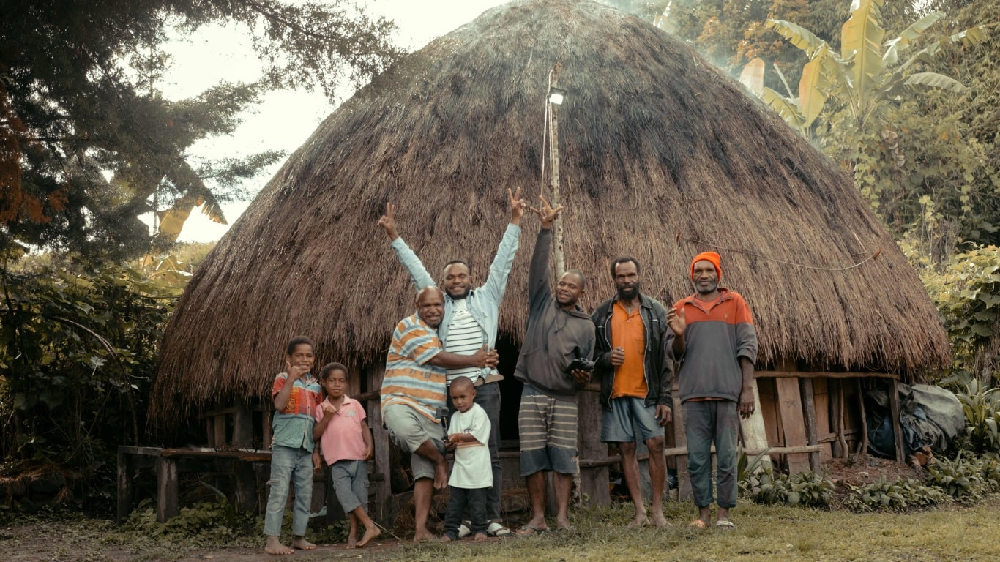

rumah tradisional
mengenal lebih jauh
Papua daratan dengan sejuta pesona. Tempat wisata, budaya, hingga rumah adat bertabur dengan keunikan yang seringkali tak terekspos di mata dunia. Setiap unsur budayanya tak habis-habis membuahkan kata takjub. Keberadaan ragam suku adat yang tersebar di tanah Papua membuat banyak sekali budaya yang perlu digali dan diketahui. Salah satunya adalah rumah adat yang berdiri di daerah Papua.
Honai merupakan rumah tradisional bagi masyarakat Papua. Secara morfologis, honai dibentuk dari dua kata. Pertama yaitu “Hun” yang berarti pria dewasa dan “Ai” yang berarti rumah. Secara harfiah, honai berarti rumah laki-laki dewasa. Bukan saja miliki laki-laki dewasa, kaum perempuan juga mempunyai honai hanya saja dalam pengistilahannya berbeda. Untuk kaum wanita, honai disebut “Ebeai”. Seperti halnya honai, Ebeai terdiri dari dua kata, yakni “Ebe” atau tubuh dalam pengertian kehadiran tubuh dan “Ai” yang berarti rumah.
menggali lebih dalam
Ada 3 jenis Rumah Honai, yaitu sebagai berikut:
1. Rumah Honai untuk kaum laki-laki
2. Rumah Ebei wanita
3. Rumah Wamai untuk kandang babi
Dengan tinggi sekitar 2 – 2.5 meter, rumah adat dari Papua terdiri dari 2 lantai. Lantai pertama biasanya terdiri dari kamar-kamar dan digunakan sebagai tempat tidur, dan lantai kedua digunakan sebagai tempat beraktifitas: ruang santai dan lain-lain. Di tengah ruangan di lantai pertama terdapat api unggun yang digunakan untuk menghangatkan diri. Rumah adat Papua Honai merupakan rumah dengan arsitektur yang sederhana, inti dari rumah ini adalah rumah yang melindungi orang-orang yang tinggal di dalamnya dari udara dingin, tanpa fungsi rumit lainnya. Kesederhanaan ini mungkin yang dijadikan patokan utama bagi suku Dani untuk membangun rumah Honai mereka, karena mereka termasuk jenis suku yang kerap kali berpindah tempat. Kesederhanaan desain dan bentuk Honai memudahkan mobilitas mereka.
filosofi dan simbolisme
Lebih dari sekadar bangunan, Honai adalah simbol dari martabat dan harga diri suku yang telah diwariskan dari generasi ke generasi. Melalui bentuknya yang khas, ia mengajarkan kepada kita untuk menghormati dan memelihara identitas budaya yang tak ternilai, sebagai bagian tak terpisahkan dari diri kita sendiri dan warisan yang harus kita lestarikan untuk masa depan.
Filosofi bangunan Honai, melingkar atau bulat mempunyai artian sebagai berikut:
1. Menjaga kesatuan dan persatuan yang paling tinggi sesama suku serta mempertahankan budaya yang telah diwariskan oleh para leluhur untuk selamanya
2. Dengan tinggal dalam satu honai maka kita sehati, sepikir dan satu tujuan dalam menyelesaikan suatu pekerjaan
3. Honai merupakan simbol dari kepribadian dan merupakan martabat dan harga diri dari orang suku yang harus dijaga oleh keturunan atau anak cucu mereka di kemudian hari.
Rumah Honai di Papua daratan tidak hanya sekadar struktur bangunan, tetapi sebuah simbol yang mengandung makna yang dalam dan kaya akan filosofi serta warisan budaya yang tak ternilai. Dalam pengertian asal katanya, Honai bukan hanya sekadar tempat tinggal, melainkan juga mencerminkan identitas, persatuan, dan martabat suku Papua.